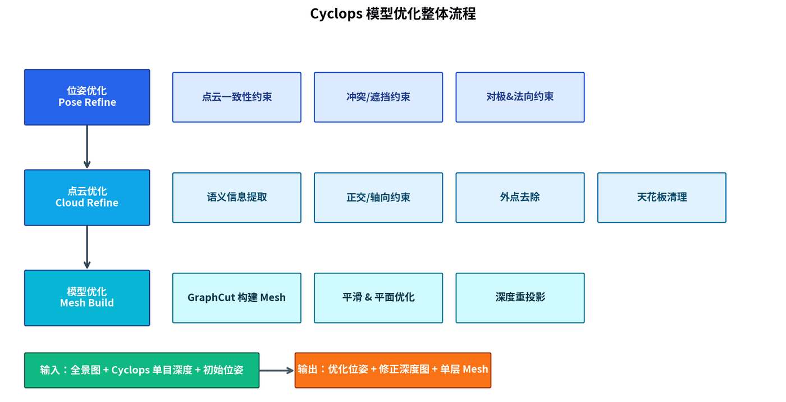
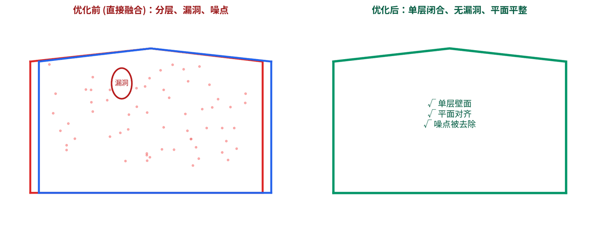

Monocular depth estimation brought closer to production geometry.
Monocular Depth Refinement
A refinement workflow for monocular depth estimation outputs from panoramic imagery, focused on cross-view consistency, outlier removal, and mesh generation quality.
Problem
Monocular depth estimation is fast and low-cost, but independent panorama-level depth predictions can create scale drift, double walls, floating outliers, noisy planes, and holes when fused into a scene-level mesh.
Approach
- Optimize indoor poses with geometric constraints that use room structure rather than relying only on fragile feature matches.
- Filter low-confidence depth and cross-view conflicts before fusion to reduce glass, sky, mirror, and wall leakage artifacts.
- Build mesh cleanup around planar structure and visibility so the final model is more stable for inspection and measurement.
My Contribution
I independently designed and implemented the full refinement workflow for monocular depth-based indoor reconstruction.
On the algorithm side, I built the core modules:
- Pose refinement with geometric constraints leveraging room structure rather than fragile feature matches
- Cross-view depth filtering to suppress glass, mirror, and wall leakage artifacts before fusion
- Noise-resistant Graph-Cut mesh reconstruction with BVH-guided invalid region detection
- View-dependent mesh refinement via spherical reprojection for close-range detail recovery
Outcome
The refined output reduces common monocular depth artifacts and makes panorama-based indoor reconstruction more usable for lightweight modeling workflows.

